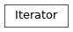

iterator¶
A lazy iterator type inspired by Rust’s iterator types.
You can extend your own types to use this iterator interface by inheriting and overriding the __next__ method.
You can also use the into_iter function, which accepts any Python iterable
and returns an Iterator.
Basic usage¶
If you already have something that’s iterable, use the into_iter function:
iter = into_iter([1, 2, 3])
It accepts any kind of iterable, so all of the following will work:
iter = into_iter([x for x in xs]) # list comprehension
iter = into_iter(x for x in xs) # generator expression
iter = into_iter(range(10)) # generator
iter = into_iter(my_list) # list
In order to collect the results back into a list, use collect():
assert into_iter([1, 2, 3]).collect() == [1, 2, 3]
Iterator methods¶
Perhaps the most used methods are map() and
filter(). See below:
result = into_iter(range(5))\
.map(lambda x: 2*x)\
.filter(lambda x: x < 7)\
.collect()
assert result == [2, 4, 6]
map() yields the result of applying the function to each
element, and filter() only yields items for which the
function returns True.
There’s also collect() which collects the elements of the
iterator into (by default) a list, but can also be provided with a function to
collect into.
For example, collecting into a dict:
result = into_iter("abc")\
.zip(range(3))\
.collect(dict)
assert result == {'a':0, 'b':1, 'c':2}
Or:
with open("my_data.json") as f:
df = into_iter(json.load(f))\
.map(some_operation)\
.filter(stuff_wanted)\
.collect(pandas.DataFrame)
Functions¶
into_iter(): Creates an Iterator from the iterable.
Classes¶
Iterator: A lazy iterator type inspired by Rust iterators.
-
class
iterator.Iterator[source]¶ A lazy iterator type inspired by Rust iterators.
See the module-level documentation for more information.
Inheritance
-
all(pred=<function Iterator.<lambda>>)[source]¶ Return true if all elements satisfy the predicate. Predicate defaults to the identity.
-
any(pred=<function Iterator.<lambda>>)[source]¶ Return true if any of the elements satisfy the predicate. Predicate defaults to the identity.
-
chain(other)[source]¶ When the elements in the iterator are exhausted, starts yielding elements from
other, chaining them together.
-
collect(collector=<function Iterator.<lambda>>)[source]¶ Use
collectorto collect the elements of the iterator. Defaults to a list.It can be useful to pass a constructor here, to create a collection out of the iterator.
Examples:
`iter.collect(lambda xs: [x for x in xs])`
to collect the results into a list:
`iter.collect(lambda xs: { x[0] : x[1] for x in xs })`to collect stream of pairs into dictionary:
class MyList: def __init__(self, stream): self.items = [ i for i in stream ] iter.collect(MyList)
to collect of items into my custom list type.
-
count()[source]¶ Consume the iterator, counting the number of iterations and returning it.
Returns: the number of items in the iterator. Note
This function will not return if your iterator is infinite (e.g created by
cycle()or a generator which never exits).
-
filter(pred)[source]¶ Applies the predicate
predto each element in the iterator.Parameters: pred (fn(A)->bool) – a function which returns Trueif the itemshould be kept. :return: a stream of values for which the predicate is true.
-
filter_map(op)[source]¶ Parameters: op (func) – each element in the iterator will be passed to this function. If the function raises :exception:`ValueError`, then the element will be filtered out. Otherwise, yield the result of the function.
Example:
def my_op(x): if x < 3: return 2*x else: raise ValueError result = into_iter(range(5))\ .filter_map(my_op)\ .collect() assert result == [0, 2, 4]
-
find(pred)[source]¶ Return the first item that satisfies the predicate. Raise LookupError if not found.
-
flatten()[source]¶ Transform an iterator of iterables into one long iterator.
Example:
assert into_iter([[1, 2], [3, 4]]).flatten().collect() == [1, 2, 3, 4]
-
fold(state, op)[source]¶ Reduce the iterator into a single value, by way of state = op(state, item) for each element in the iterator.
-
inspect(op)[source]¶ Do something with each element of an iterator. Different to map; map essentially does:
[ f(x) for x in xs ]
Compare to this method, which essentially does:
[ (f(x), x)[1] for x in xs ]
In other words,
map()applies a function to each element of the iterator and returns the result,inspect()applies a function to each element of the iterator and returns the element.This can be useful e.g for logging errors before filtering them out:
def log_if_bad(egg): if egg.is_bad(): print("bad egg will be removed") else: pass my_iter\ .map(lambda x: some_operation(x))\ .inspect(lambda e: log_if_bad(e))\ .filter(lambda e: not e.is_bad())
-
last()[source]¶ Returns: the last item in the iterator. Raises: LookupError – if the iterator is empty.
-
map(op)[source]¶ Applies the transformation
opto each element of the iterator.Parameters: op (fn(A)->B) – the transformation to apply to each element of the iterator. Example:
result = into_iter([1, 2, 3])\ .map(lambda x: 2*x)\ .collect() assert result == [2, 4, 6]
-
max()[source]¶ Return the maximum element in the stream. If there are many maxima, returns the first one.
-
max_by(comp)[source]¶ comp(a, b) should return True if a is greater than b. Return the maximum element in the stream according to the comparison function given. If there are many maxima, returns the first one.
-
max_by_score(score)[source]¶ Return the element with the highest score according to score. If there are many minima, returns the first one.
-
min()[source]¶ Return the minimum element in the stream. If there are many minima, return the first one.
-
min_by(comp)[source]¶ comp(a, b) should return True if a is less than b. Return the minimum element in the stream according to the comparison function given. If there are many minima, returns the first one.
-
min_by_score(score)[source]¶ Return the element with the lowest score according to score. If there are many minima, returns the first one.
-
none(pred=<function Iterator.<lambda>>)[source]¶ Return true if none of the elements satisfy the predicate. Predicate defaults to the identity.
-
partition(op)[source]¶ Consume the Iterator, splitting the elements into two lists based on whether or not they satisfy the predicate.
-
partition_map(pred, op_t, op_f=<function Iterator.<lambda>>)[source]¶ Applies pred to each element in the stream. If the result is true, then apply op_t, otherwise, apply op_f.
-
peekable()[source]¶ Return an iterator with an additional method, peek, which can get the the next element in the stream without advancing the iterator.
-
position(pred)[source]¶ Return the position of the first item that satisfies the predicate. Raise LookupError if not found.
-
product()[source]¶ Return the product of all elements in the iterator. Raise StopIteration if the iterator is empty.
-
zip(*args)[source]¶ Transforms a group of streams into a stream of groups, via the Python builtin.
Example:
result = into_iter(range(5)).zip(range(5,10)).collect() assert result == [(0,5), (1,6), (2,7), (3,8), (4,9)]
Note
Unlike the Rust equivalent, this function can accept a variable number of arguments.
-